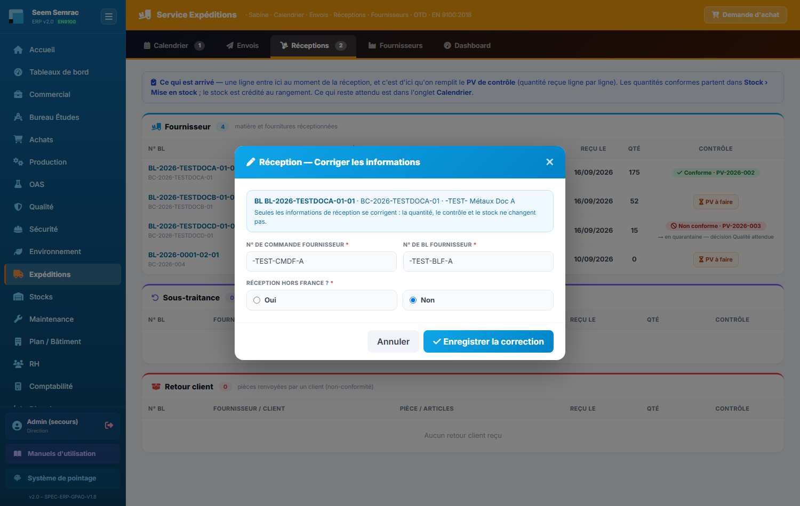
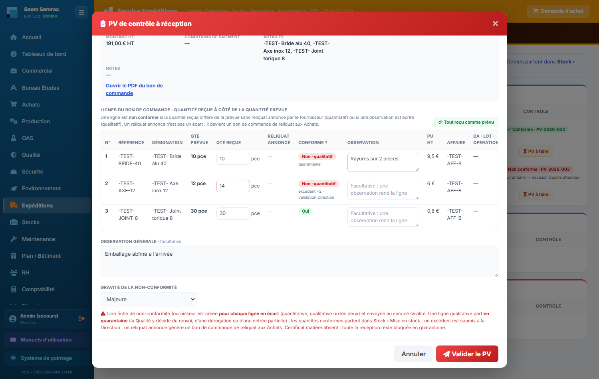

Service Expéditions
Les Expéditions sont la porte d'entrée et de sortie des marchandises. Le service est organisé autour d'une idée simple : chaque chose a un seul endroit. Ce qu'il y a à faire — réceptionner, envoyer — est dans le Calendrier, et nulle part ailleurs : c'est l'onglet d'accueil, votre plan de journée. Envois montre ce qui va partir (les commandes en cours, pour voir venir la charge) ; Réceptions montre ce qui est arrivé, et c'est de là qu'on remplit le PV de contrôle. S'y ajoutent le référentiel Fournisseurs et un Dashboard. Vous y apprendrez aussi comment l'ERP mesure la ponctualité (OTD), la vôtre envers les clients et celle de vos fournisseurs.
Et une règle de rangement : les actions du jour vivent dans le Calendrier. Les onglets Envois et Réceptions sont des vues — ils montrent ce qui vient et ce qui est entré. Deux exceptions, et elles n'ont pas de date prévue : le PV de contrôle se remplit dans Réceptions, au moment où l'on a la pièce en main, et le départ d'un retour fournisseur se pointe dans Envois, dès que la Qualité l'a décidé. Pour tout le reste, si vous cherchez un bouton, il est dans le Calendrier.
Calendrier & journée — l'onglet d'accueil
À quoi ça sert. C'est votre plan de journée, et le seul endroit où l'on agit. Voir arrivées et départs sur une même frise pour anticiper les journées chargées et repérer les retards d'un coup d'œil ; en dessous, le bloc « Aujourd'hui » liste précisément ce qui doit entrer et sortir, retards compris, chaque ligne portant son bouton.
Ce que vous voyez
- Une frise unique, une ligne par sens de flux, chaque mouvement positionné à sa date. Une légende de couleurs distingue les natures : commande fournisseur, envoi ou retour de sous-traitance, livraison client, retour client.
- Un repère sur le jour courant, et les mouvements dépassés signalés en retard.
- Sous la frise, deux blocs : à réceptionner aujourd'hui et à envoyer aujourd'hui. Chaque ligne porte son bouton « Traiter » — c'est là que se font la réception d'un BC (références du fournisseur, hors France ; voir Réceptions), le départ d'un BST, son retour et l'arrivée d'un retour client.

Pas à pas — envoyer un BST chez le sous-traitant
- Dans le bloc « à envoyer aujourd'hui », repérez la ligne Vers ST du BST et cliquez « Traiter ».
- Confirmez : le départ est horodaté, et la pièce est désormais attendue en retour — elle apparaît à ce titre dans les arrivées de la frise.

Quand la porte est fermée, le bouton « Traiter » laisse la place à une pastille verrou qui nomme l'opération attendue — par exemple 🔒 BDT-2026-0001-01-04 (Ébavurage) n'est pas soldé. Vous savez donc immédiatement qui relancer. La pièce repart d'elle-même dès que l'atelier solde ce bon de travail. Un BST placé en tête de gamme (rien avant lui — un traitement de surface sur matière brute, par exemple) part librement.
Envois — ce qui va partir
À quoi ça sert. Voir venir la charge d'expédition. On y lit ce qui est en cours de fabrication et ce qui est en cours de sous-traitance, pour savoir ce qu'on aura à faire partir dans les jours qui viennent. Une seule chose s'y valide : le départ d'un retour fournisseur, parce que c'est le seul mouvement qui n'a pas de date prévue — il part dès que la Qualité l'a décidé.
Ce que vous voyez
- Client — les commandes en cours, dès qu'elles sont passées en programmation. Chaque ligne porte l'affaire, le client, la pièce, une barre d'avancement (bons de travail soldés sur le total), la livraison prévue et l'état : En production, Prête à expédier, ou le motif du blocage qualité s'il y en a un.
- Sous-traitance — les BST en cours : le sous-traitant, l'opération, la quantité, l'envoi prévu. La colonne d'état affiche 🔒 attend … quand l'opération précédente de la gamme n'est pas encore soldée.
- Retours fournisseurs — les lots refusés au contrôle que la Qualité a décidé de renvoyer, et les excédents de réception refusés par la Direction (pièces reçues en trop, sans avoir ni remplacement).Une ligne par lot : BL / lot (avec le BC et la NC d'origine), fournisseur, pièce (avec la mention avoir réclamé ou remplacement attendu), quantité à renvoyer, date de décision, et le bouton « Expédié ».

⚠ capture à rafraîchir — la carte « Retours fournisseurs » ne figure pas encore sur la capture ci-dessus.
Pas à pas — expédier un retour fournisseur
- Dans la carte « Retours fournisseurs », repérez le lot : la ligne dit combien renvoyer, à qui, et ce qu'on attend en échange (avoir ou remplacement).
- Préparez le colis, puis cliquez « Expédié ».
- Renseignez, si vous l'avez, la référence du bon de retour ou le n° de suivi — c'est facultatif — puis validez.
- La ligne quitte la liste : la date et la personne sont enregistrées, et la Qualité voit son retour parti.
Pas à pas — créer un bon de livraison client
- Dans « Commandes prêtes à expédier », cliquez la commande concernée.
- Sélectionnez les lots à expédier et la quantité : une livraison partielle est possible, le reliquat reste sur la commande.
- Renseignez le transporteur et, si vous l'avez, le prix de transport.
- Validez : le BL est créé, le stock est décrémenté et une facture client ainsi que l'écriture de vente sont préparées.

Réceptions — ce qui est arrivé
À quoi ça sert. L'inverse d'Envois : tout ce qui est déjà entré, rangé par nature. Une ligne y arrive au moment de la réception — enregistrée, elle, depuis le Calendrier. C'est de cet onglet qu'on remplit le PV de contrôle de réception, et qu'on corrige les informations saisies à la réception.
Ce que vous voyez
Trois familles, selon la provenance :
- Fournisseur — les commandes fournisseurs réceptionnées : n° de bon de livraison (et bon de commande dessous), fournisseur, articles, date d'arrivée, quantité reçue (« — » si elle est inconnue). Sous les articles, les informations de réception : BL fourn. et Cde fourn. (les numéros du fournisseur), et pour une marchandise venue de l'étranger la pastille Hors France suivie du poids, de la nomenclature douane, du code EWX et du mode d'arrivée. Le lien « Corriger » permet de rectifier une faute de frappe.
- Sous-traitance — les pièces revenues de chez un prestataire.
- Retour client — les retours arrivés, rattachés à leur non-conformité.
La colonne Contrôle dit où en est chaque réception : PV à faire (un bouton, qui ouvre le PV), Conforme · PV-x ou Non conforme · PV-x. Le PV se remplit ici, au moment où l'on a la pièce en main.
Sous un PV non conforme, une ligne en petit dit ce que la Qualité en a fait — vous n'avez pas à aller le demander :
- « en quarantaine — décision Qualité attendue » — le lot est isolé, rien n'est encore tranché.
- « renvoyé au fournisseur · à expédier », puis « · expédié » une fois le colis parti (le lot figure alors dans Envois → Retours fournisseurs).
- « dérogation fournisseur · accepté » — le lot a été accepté en l'état ; il part dans Stock › Rangement / Mise en stock.
- « entrée partielle 6/10 » — la part acceptée part dans Stock › Mise en stock, le reste est reparti ou a été mis au rebut.
- Un PV peut porter plusieurs quarantaines (une par ligne avec observation, plus une si le certificat manque) : la ligne dit alors « 2 quarantaines : … ». Un PV non conforme pour un simple écart de quantité n'en a aucune.

Pas à pas — enregistrer une réception fournisseur
Cela se fait depuis le Calendrier, bloc « à réceptionner aujourd'hui ».
- Repérez la ligne du bon de commande et cliquez « Traiter ». Le n° de bon de livraison interne et le n° d'affaire sont déjà remplis — ils viennent du bon de commande, il n'y a pas à les ressaisir.
- Saisissez le N° de commande fournisseur et le N° de BL fournisseur, tels qu'ils figurent sur les papiers du colis. Les deux sont obligatoires.
- Lisez le bandeau vert : il indique la quantité attendue — le reste à recevoir du bon de commande. Vous n'avez pas de quantité à saisir ici : la quantité réellement reçue, un manque, un excédent ou un reliquat annoncé par le fournisseur se déclarent au PV de contrôle, ligne par ligne.
- Répondez à « Réception hors France ? » (Oui ou Non, obligatoire). Si Oui, quatre champs apparaissent, tous obligatoires :
- Poids matière (kg) — un nombre supérieur à 0 ; virgule décimale et espace entre les milliers acceptées (« 1 250,5 ») ;
- N° de nomenclature (douane) — le code de nomenclature douanière du produit importé ;
- Code EWX — 1 ou 2 ;
- Mode d'arrivée — Routier, Maritime, Aérien, Ferroviaire ou Messagerie / express.
- Cliquez « Valider la réception ». S'il manque une information, le champ concerné s'encadre en rouge et un message dit quoi corriger. Sinon, un bon de livraison de réception est créé et rattaché au BC, la date d'arrivée réelle est posée, et la ligne apparaît dans l'onglet Réceptions avec « PV à faire ». Rien n'entre encore en stock : faites le PV de contrôle.

⚠ Depuis le 15/09/2026, la case « Livraison partielle » n'existe plus. Le fournisseur livre en plusieurs fois ? Réceptionnez normalement, puis au PV saisissez la quantité réellement reçue et cochez « Reliquat » sur la ligne : un bon de commande de reliquat est créé aux Achats pour le restant.
Pas à pas — corriger les informations d'une réception
- Dans l'onglet Réceptions, sous les articles de la réception, cliquez « Corriger ».
- La même fenêtre s'ouvre en mode « Corriger les informations », pré-remplie : N° de commande et N° de BL fournisseur, hors France, poids, nomenclature, code EWX, mode d'arrivée.
- Rectifiez puis cliquez « Enregistrer la correction ». Les mêmes règles s'appliquent qu'à la réception.

Pas à pas — faire le PV de contrôle
- Dans l'onglet Réceptions, cliquez « PV à faire » sur la réception. Le bandeau rouge rappelle le bon de commande, le BL, la quantité attendue et les références du fournisseur.
- Choisissez le résultat : Conforme ou Non conforme. Rien n'est coché d'avance : c'est votre choix.
- Choisissez le contrôleur dans la liste : elle ne contient que les salariés actifs qui ont l'écriture sur les Expéditions. Si vous en faites partie, vous êtes pré-sélectionné.
- Si le bon de commande exige un certificat matière, une case violette apparaît : cochez « Certificat matière reçu et conforme » seulement si le certificat est là et conforme.
- Remplissez le tableau des lignes du bon de commande — il est affiché en Conforme comme en Non conforme. Pour chaque ligne :
- Qté prévue : ce qui était attendu sur cette réception (lecture) ;
- Qté reçue : pré-remplie avec la quantité prévue — corrigez-la si vous avez compté autre chose (0 si rien n'est arrivé) ;
- Reliquat annoncé : la case apparaît quand vous avez reçu moins que prévu — cochez-la si le fournisseur annonce qu'il livrera le reste ;
- Observation : facultative — écrivez-y un défaut constaté (pièces abîmées, mauvaise nuance…).
- Conforme : toutes les lignes doivent être à Oui (un reliquat annoncé n'est pas un écart). Cliquez « Valider le PV » : les quantités reçues partent dans Stock › Rangement / Mise en stock, et un reliquat annoncé crée un bon de commande de reliquat aux Achats (date d'arrivée à valider).

Non conforme — la fenêtre affiche en plus tout ce qui appartient au bon de commande :
- En haut, l'en-tête du bon de commande : n° BC, fournisseur, date, livraison prévue, affaire(s), montant HT, conditions de paiement, articles, notes, et le lien « Ouvrir le PDF du bon de commande » si vous y avez droit.
- Le même tableau des lignes : saisissez les quantités reçues, cochez les reliquats annoncés et écrivez une observation sur chaque ligne qui a un défaut. Une ligne est non conforme si sa quantité reçue diffère de la prévue sans reliquat annoncé (quantitatif) ou si une observation est écrite (qualitatif) — les deux sont possibles.
- En bas, l'observation générale (facultative) et la gravité de la non-conformité (Majeure par défaut).
- Cliquez « Valider le PV ». Il faut au moins une ligne en écart, ou un certificat exigé non confirmé. Une ligne fautive est surlignée en rouge et le curseur va dans la case à corriger.

- Ligne conforme (ou manque couvert par un reliquat annoncé) : la quantité reçue part dans Stock › Rangement / Mise en stock.
- Manque sans reliquat : une non-conformité fournisseur quantitative (nature « Logistique - Quantité ») ; ce qui est arrivé part quand même en Mise en stock.
- Excédent (reçu plus que prévu) : la quantité prévue part en Mise en stock ; l'excédent est soumis à la Direction (cockpit « À valider ») qui l'accepte en stock ou le fait renvoyer ; plus une non-conformité quantitative.
- Observation : une non-conformité qualitative (nature « À requalifier ») et la quantité reçue de la ligne part en quarantaine — rien de cette ligne en stock tant que la Qualité n'a pas décidé.
- Reliquat annoncé : un bon de commande de reliquat
…-R1aux Achats, pour le restant, date d'arrivée à valider. - Certificat absent : une non-conformité « Logistique - Certificats » et toute la réception (hors lignes déjà en quarantaine, hors excédents) reste bloquée en quarantaine.
Pas à pas — réceptionner un retour client
- Le retour doit d'abord avoir été annoncé en Qualité : à la déclaration de la non-conformité client, cochez « Retour de marchandise prévu » et renseignez le n° de commande, la quantité et la date prévue.
- Il apparaît alors dans le Calendrier, en arrivée attendue. Cliquez « Traiter », puis « Enregistrer l'arrivée ».
- Le n° de commande est prérempli depuis la non-conformité ; complétez la quantité réellement revenue et validez.
- Un bon de livraison d'entrée est créé et rattaché à la commande, et la non-conformité passe en « retour reçu ».
Règles & points d'attention
- Quantité attendue = reste à recevoir. Un bon de commande de 100 pièces dont 40 sont déjà reçues attend 60 à la réception suivante. La quantité réellement reçue se saisit au PV ; c'est elle qui s'affiche ensuite dans l'onglet Réceptions. Un reliquat annoncé se coche au PV (« Reliquat ») et devient un bon de commande de reliquat.
- Bon de commande à plusieurs articles : au PV, chaque ligne a sa quantité reçue et part en Mise en stock sous sa référence.
- Bon de commande de reliquat (
BC-…-R1) : il n'apparaît au Calendrier qu'une fois sa date d'arrivée validée par les Achats ; il se réceptionne ensuite comme un autre. - Un excédent refusé par la Direction apparaît dans Envois → Retours fournisseurs : les pièces en trop sont à renvoyer.
- Un lot que la Qualité a décidé de faire remplacer réapparaît dans « À réceptionner » : la livraison de remplacement se réceptionne comme une autre.
- La date d'arrivée prévue peut être modifiée, mais l'ERP gèle la première date promise : c'est elle, et non la date repoussée, qui sert à calculer l'OTD du fournisseur. Un fournisseur ne peut donc pas « racheter » sa ponctualité en décalant ses dates. Ce changement de date se fait dans Achats → onglet « Bons de commande » — pour n'importe quelle commande encore attendue, y compris une commande déjà validée par le fournisseur. Sur les lignes déjà réceptionnées, le bouton bleu « Date d'arrivée » laisse place à une pastille grise 🔒 Figée.
- Dès que la marchandise est arrivée, la date d'arrivée prévue est figée, définitivement — et cela vaut aussi pour une réception partielle. Cette date est la promesse du fournisseur : la réécrire après coup effacerait le retard constaté. Une commande est considérée comme arrivée dès qu'elle porte une date de réception réelle, un bon de livraison rattaché ou un statut de réception.
- Un bon de commande annulé n'apparaît nulle part dans le service — ni en réception, ni au calendrier, ni dans l'historique fournisseur.
Fournisseurs — référentiel, commandes & livraisons
À quoi ça sert. Consulter la liste des fournisseurs, en ajouter et en supprimer, et surtout retrouver pour chacun tout l'historique des échanges : les bons de commande qui lui ont été envoyés et les bons de livraison reçus. Chaque ligne ouvre l'affaire correspondante.
Ce que vous voyez
L'écran est en deux colonnes.
- À gauche, la liste : un champ « Rechercher un fournisseur… » qui filtre à la frappe, puis une ligne par fournisseur avec son nom, son code, sa catégorie et deux compteurs — N BC (bons de commande envoyés) et N BL (bons de livraison reçus).
- À droite, le détail du fournisseur sélectionné : son identité (code, catégorie, contact, téléphone, e-mail), puis deux tableaux.
- Bons de commande envoyés — N° BC · Date · Montant · Réception (reçu ou en attente) · Affaire.
- Bons de livraison reçus — N° BL · Date · Transporteur / BL fourn. (depuis le 14/09/2026 le transporteur n'est plus saisi à la réception : la colonne affiche alors le N° de BL du fournisseur) · BC lié · Affaire.

Pas à pas — consulter l'historique d'un fournisseur
- Tapez les premières lettres du nom dans le champ de recherche, ou faites défiler la liste.
- Cliquez le fournisseur : le détail s'affiche à droite, sans recharger la page.
- Lisez ses bons de commande envoyés — vous voyez immédiatement lesquels sont encore en attente de réception.
- Lisez ses bons de livraison reçus : la colonne Transporteur / BL fourn. indique par qui la marchandise est arrivée ou, pour une réception récente, le numéro du bon de livraison du fournisseur ; la colonne BC lié rattache la livraison à sa commande.
- Cliquez n'importe quelle ligne des deux tableaux : l'ERP ouvre la fiche de l'affaire correspondante, où vous retrouvez la commande complète, de la demande de travaux à la facturation.
Pas à pas — ajouter un fournisseur
- Cliquez « Nouveau fournisseur » en haut à droite.
- Renseignez au minimum le nom (seul champ obligatoire) ; complétez si vous les avez le code, la catégorie, le contact, le téléphone, l'e-mail et l'adresse.
- Enregistrez : le fournisseur rejoint le référentiel et devient sélectionnable partout ailleurs dans l'ERP — demandes de prix, bons de commande, catalogue.
Pas à pas — supprimer un fournisseur
- Sélectionnez le fournisseur, puis cliquez « Supprimer » dans le bandeau de droite.
- Confirmez. Les bons de commande déjà émis ne sont pas supprimés : l'historique comptable et documentaire reste intact.
Dashboard
À quoi ça sert. Les indicateurs du service : volumes expédiés, ponctualité (OTD) client et fournisseur, en-cours et retards. C'est la vue que l'on présente en revue de service.

- L'OTD fournisseur se calcule sur la première date promise, jamais sur une date repoussée.
- Le PV de contrôle à réception (voir Réceptions) alimente la qualité fournisseur : un colis reçu non conforme dégrade la scorecard du fournisseur, consultable côté Achats.